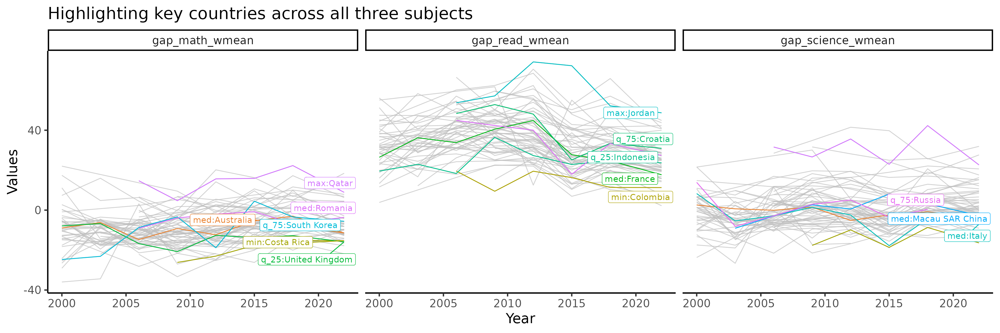

Exploring temporal trends
The Freemasons
2020-06-05
exploring_time.RmdTime series visualisation
We will first visualise the time series trend of countries, regardless of when and how long they have participated in the PISA study.
w_mean = function(x, w){weighted.mean(x = x, w = w, na.rm=TRUE)} stu_summ = student %>% group_by(year, country) %>% summarise_at(.vars = vars(math, read, science), .funs = list(wmean = ~w_mean(., w = stu_wgt), min = ~min(., na.rm = TRUE), max = ~max(., na.rm = TRUE))) %>% ungroup() %>% dplyr::mutate(year = year %>% as.character() %>% as.integer) stu_wmean_long = stu_summ %>% select(year, country, contains("wmean")) %>% pivot_longer(cols = contains("wmean"), names_to = "wmean_names", values_to = "wmean_values") stu_wmean_long %>% ggplot(aes(x = year, y = wmean_values, group = country)) + geom_line() + facet_wrap(~wmean_names) + labs(x = "Year", y = "Weighted mean values")

## Uncomment this to make interactive # library(plotly) # ggplotly()
Australia, New Zealand, Indonesia
We focus on three countries here. The dark line is the weighted mean score of each country for each subject. The shading indicates the min and max score of a given year.
stu_summ_long2 = stu_summ %>% filter(country %in% c("AUS", "NZL", "IDN")) %>% pivot_longer(cols = math_wmean:science_max, names_to = "names", values_to = "values") %>% separate(col = names, into = c("subject", "statistics"), sep = "_") %>% pivot_wider(names_from = "statistics", values_from = "values") stu_summ_long2 #> # A tibble: 63 x 6 #> year country subject wmean min max #> <int> <fct> <chr> <dbl> <dbl> <dbl> #> 1 2000 AUS math 530. 211. 784. #> 2 2000 AUS read 529. 159 828. #> 3 2000 AUS science 527. 167. 800. #> 4 2000 IDN math 371. 88.5 646. #> 5 2000 IDN read 376. 93.3 610. #> 6 2000 IDN science 394. 84.4 680. #> 7 2000 NZL math 537. 195. 796. #> 8 2000 NZL read 529. 134. 834. #> 9 2000 NZL science 528. 169. 830. #> 10 2003 AUS math 524. 161. 833. #> # … with 53 more rows stu_summ_long2 %>% ggplot(aes(x = year, y = wmean)) + geom_ribbon(aes(ymin = min, ymax = max), fill = "grey70") + geom_line(colour = "black", size = 2) + facet_grid(subject~country, labeller = label_both) + labs(x = "Year", y = "Test score values")

brolgar visualisations
Calculating slope
There are many countries/regions who did not participate in all 7 PISA countries. As we are interested in calculating linear models, we will retain only those countries/regions participated in 5 or more studies.
complete_nations = stu_summ %>% group_by(country) %>% filter(n() >= 5) %>% ungroup() %>% mutate(year_subtract = year - min(year)) %>% as_tsibble(key = country, index = year_subtract) math_slope = complete_nations %>% ## Filter for countries participated in all 7 PISA studies select( year_subtract, country, math_wmean) %>% key_slope(math_wmean ~ year_subtract) %>% left_join(countrycode, by = "country") math_slope %>% ggplot(aes(x = .intercept, y = .slope_year_subtract)) + geom_point() + geom_text_repel(aes(label = country_name), size = 3) + geom_hline(yintercept = 0, colour = "red") + labs(x = "Weighted mean math score in first participation", y = "Avg. increase in weighted mean score every year") + scale_y_continuous(limits = c(-8, 8))

math_slope_near <- math_slope %>% keys_near(key = country, var = .slope_year_subtract) math_slope_near #> # A tibble: 5 x 5 #> country .slope_year_subtract stat stat_value stat_diff #> <chr> <dbl> <fct> <dbl> <dbl> #> 1 NZL -2.48 min -2.48 0 #> 2 USA -0.816 q_25 -0.797 0.0187 #> 3 GRC 0.107 med 0.172 0.0641 #> 4 TUR 1.35 q_75 1.32 0.0336 #> 5 QAT 7.59 max 7.59 0
Highlighting monotone countries for subjects
# math_features <- complete_nations %>% # features(math_wmean, feat_brolgar) # # math_features feature_monotone = complete_nations %>% features_at(.var = vars(math_wmean, read_wmean, science_wmean), features = feat_monotonic) %>% dplyr::select(country, contains("increase"), contains("decrease")) feature_monotone_long = feature_monotone %>% pivot_longer(cols = -country, names_to = "names", values_to = "monotone_value") %>% separate(col = names, into = c("subject", "direction"), sep = "_(?!.*_)") plot_tbl = complete_nations %>% as_tibble() %>% select(year, country, math_wmean, read_wmean, science_wmean) %>% pivot_longer(cols = contains("_wmean"), names_to = "subject", values_to = "wmean_value") %>% left_join(feature_monotone_long, by = c("country", "subject")) %>% left_join(countrycode, by = "country") plot_tbl #> # A tibble: 2,130 x 7 #> year country subject wmean_value direction monotone_value country_name #> <int> <chr> <chr> <dbl> <chr> <lgl> <chr> #> 1 2000 ALB math_wmean 395. increase FALSE Albania #> 2 2000 ALB math_wmean 395. decrease FALSE Albania #> 3 2000 ALB read_wmean 354. increase TRUE Albania #> 4 2000 ALB read_wmean 354. decrease FALSE Albania #> 5 2000 ALB science_wmean 378. increase FALSE Albania #> 6 2000 ALB science_wmean 378. decrease FALSE Albania #> 7 2009 ALB math_wmean 377. increase FALSE Albania #> 8 2009 ALB math_wmean 377. decrease FALSE Albania #> 9 2009 ALB read_wmean 385. increase TRUE Albania #> 10 2009 ALB read_wmean 385. decrease FALSE Albania #> # … with 2,120 more rows plot_tbl %>% ggplot(aes(x = year, y = wmean_value, group = interaction(country, subject))) + geom_line() + gghighlight::gghighlight(monotone_value, label_key = country_name) + facet_grid(direction~subject) + labs(x = "Year", y = "Weighted means")

Highlighting variance
We will use three measures of variability (standard deviation, coefficient of variation, quartile coefficient of dispersion) to visualise the general movements of countries over time. But we will use coefficient of variation as the final visualisation.
student %>% group_by(year, country) %>% summarise_at( .vars = vars(math, read, science), .funs = list( mean = ~ mean(., na.rm = TRUE), sd = ~ sd(., na.rm = TRUE))) %>% ggplot(aes(x = math_mean, y = math_sd, colour = year)) + geom_point() + scale_colour_brewer(palette = "Dark2") + labs(x = "Mean maths score", y = "SD maths score")

qcd = function(x){ q3 = quantile(x, 0.75, na.rm = TRUE) q1 = quantile(x, 0.25, na.rm = TRUE) return((q3-q1)/(q3+q1)) } cv = function(x){ sd(x, na.rm = TRUE)/mean(x, na.rm = TRUE) } stu_var_summ = student %>% group_by(year, country) %>% summarise_at( .vars = vars(math, read, science), .funs = list( sd = ~ sd(., na.rm = TRUE), qcd = ~ qcd(.), cv = ~ cv(.))) %>% dplyr::mutate(year = year %>% as.character() %>% as.integer) %>% group_by(country) %>% filter(n() >= 5) %>% ungroup() stu_var_summ_long = stu_var_summ %>% pivot_longer(cols = -c("year", "country"), names_to = "names", values_to = "values") %>% separate(col = "names", into = c("subject", "statistic"), sep = "_") stu_var_summ_long %>% ggplot(aes(x = year, y = values, group = country)) + geom_line() + facet_grid(statistic~subject, scales = "free_y")

stu_var_summ = stu_var_summ %>% as_tsibble(key = country, index = year) stu_var_near = stu_var_summ %>% features(math_cv, feat_brolgar) %>% keys_near(key = country, var = median) stu_var_near #> # A tibble: 6 x 5 #> country median stat stat_value stat_diff #> <fct> <dbl> <fct> <dbl> <dbl> #> 1 FIN 0.153 min 0.153 0 #> 2 ISL 0.178 q_25 0.178 0.000122 #> 3 AUS 0.187 med 0.187 0.000772 #> 4 HUN 0.188 med 0.187 0.000772 #> 5 IDN 0.202 q_75 0.201 0.00110 #> 6 QAT 0.263 max 0.263 0 stu_var_plotdf = stu_var_summ_long %>% filter(subject == "math", statistic == "cv") %>% left_join(stu_var_near, by = "country") %>% left_join(countrycode, by = "country") %>% as_tibble() %>% mutate(label_stats_country = ifelse(is.na(stat), NA, paste0(stat, ":", country_name))) stu_var_plotdf %>% ggplot(aes(x = year, y = values, group = country, colour = stat)) + geom_line() + gghighlight::gghighlight(!is.na(stat), label_key = label_stats_country) + labs(y = "Coef. of variation across students")
Gender gap over time
Though not perfect measures, we will look at the differences in the average test scores for each gender.
In maths, there are more countries with a higher average for the boys. In reading, the girls completely dominates in every country. Science is more evenly spilt.
stu_gender_summ = student %>% filter(complete.cases(gender)) %>% group_by(year, country, gender) %>% summarise_at(.vars = vars(math, read, science), .funs = list(wmean = ~w_mean(., w = stu_wgt))) %>% mutate(year = year %>% as.character() %>% as.integer) %>% group_by(country) %>% filter(n() >= 10) %>% ungroup() %>% pivot_longer(cols = contains("_wmean"), names_to = "names", values_to = "values") %>% pivot_wider(names_from = c("gender", "names"), values_from = "values") stu_ggap_summ = stu_gender_summ %>% dplyr::transmute( year, country, gap_math_wmean = female_math_wmean - male_math_wmean, gap_read_wmean = female_read_wmean - male_read_wmean, gap_science_wmean = female_science_wmean - male_science_wmean) stu_ggap_summ_long = stu_ggap_summ %>% pivot_longer(cols = contains("gap"), names_to = "gap_names", values_to = "gap_values") stu_ggap_summ_long %>% ggplot(aes(x = year, y = gap_values)) + geom_point() + geom_line(aes(group = country)) + geom_hline(yintercept = 0, colour = "red") + facet_wrap(~gap_names) + labs(title = "Avg. gender gaps for countries across subjects and years", subtitle = "Gap = avg. female score - avg. male score")

Across all three subjects (looks a bit ugly)
stu_ggap_summ_nest = stu_ggap_summ %>% pivot_longer(contains("_wmean"), names_to = "names", values_to = "values") %>% group_by(names) %>% nest() %>% mutate(f_tbl = map(.x = data, .f = ~ .x %>% as_tsibble(key = country, index = year) %>% features(values, feat_brolgar) %>% keys_near(key = country, var = range2)), f_data = map2(.x = data, .y = f_tbl, .f = ~ left_join(.x, .y, by = "country"))) stu_ggap_summ_plotdf = stu_ggap_summ_nest %>% select(names, f_data) %>% unnest(f_data) %>% left_join(countrycode, by = "country") %>% mutate(label_stats_country = ifelse(is.na(stat), NA, paste0(stat, ":", country_name))) stu_ggap_summ_plotdf %>% ggplot(aes(x = year, y = values)) + geom_line(aes(group = country, colour = country)) + gghighlight(!is.na(stat), label_key = label_stats_country, calculate_per_facet = TRUE, keep_scales = TRUE) + facet_wrap(~names)

Math only (less elegant)
stu_gap_math_near = stu_ggap_summ %>% as_tsibble(key = country, index = year) %>% features(gap_math_wmean, feat_brolgar) %>% keys_near(key = country, var = median) stu_gap_math_plotdf = stu_ggap_summ %>% as_tibble() %>% left_join(stu_gap_math_near, by = "country") %>% left_join(countrycode, by = "country") %>% mutate(label_stats_country = ifelse(is.na(stat), NA, paste0(stat, ":", country_name))) p_math = stu_gap_math_plotdf %>% ggplot(aes(x = year, y = gap_math_wmean, group = country, colour = stat)) + geom_line() + gghighlight::gghighlight(!is.na(stat), label_key = label_stats_country) p_math

library(lme4) # aus_data = student %>% filter(country == "AUS") # obj = lmer(math ~ gender + (gender|year/school_id), data = student, # control = lmerControl(optimizer = "optimx", calc.derivs = FALSE, # optCtrl = list(method = "nlminb", starttests = FALSE, kkt = FALSE))) # # summary(obj) sub_stu = student %>% filter(country %in% c("AUS")) t.test(math ~ gender, data = sub_stu) obj = lmer(math ~ gender + escs + (gender | year/school_id), data = sub_stu) summary(obj) # aus_aug = broom::augment(obj) # sub_stu = student %>% filter(country %in% c("QAT")) # # obj = lmer(math ~ gender + escs + (gender | year/school_id), data = sub_stu) # # summary(obj)
Session info
sessionInfo() #> R version 4.0.0 (2020-04-24) #> Platform: x86_64-apple-darwin17.0 (64-bit) #> Running under: macOS Catalina 10.15.5 #> #> Matrix products: default #> BLAS: /Library/Frameworks/R.framework/Versions/4.0/Resources/lib/libRblas.dylib #> LAPACK: /Library/Frameworks/R.framework/Versions/4.0/Resources/lib/libRlapack.dylib #> #> locale: #> [1] en_US.UTF-8/en_US.UTF-8/en_US.UTF-8/C/en_US.UTF-8/en_US.UTF-8 #> #> attached base packages: #> [1] stats graphics grDevices utils datasets methods base #> #> other attached packages: #> [1] tsibble_0.9.0 ggrepel_0.8.2 gghighlight_0.3.0 #> [4] brolgar_0.0.5.9100 patchwork_1.0.0 forcats_0.5.0 #> [7] stringr_1.4.0 dplyr_1.0.0 purrr_0.3.4 #> [10] readr_1.3.1 tidyr_1.1.0 tibble_3.0.1 #> [13] ggplot2_3.3.1 tidyverse_1.3.0 learningtower_0.0.0.9000 #> #> loaded via a namespace (and not attached): #> [1] Rcpp_1.0.4.6 lubridate_1.7.8 lattice_0.20-41 utf8_1.1.4 #> [5] assertthat_0.2.1 rprojroot_1.3-2 digest_0.6.25 R6_2.4.1 #> [9] cellranger_1.1.0 backports_1.1.7 reprex_0.3.0 evaluate_0.14 #> [13] httr_1.4.1 pillar_1.4.4 rlang_0.4.6 readxl_1.3.1 #> [17] rstudioapi_0.11 blob_1.2.1 rmarkdown_2.2 pkgdown_1.5.1.9000 #> [21] labeling_0.3 desc_1.2.0 fabletools_0.1.3 munsell_0.5.0 #> [25] broom_0.5.6 anytime_0.3.7 compiler_4.0.0 modelr_0.1.8 #> [29] xfun_0.14 pkgconfig_2.0.3 htmltools_0.4.0 tidyselect_1.1.0 #> [33] fansi_0.4.1 crayon_1.3.4 dbplyr_1.4.4 withr_2.2.0 #> [37] MASS_7.3-51.5 grid_4.0.0 nlme_3.1-147 jsonlite_1.6.1 #> [41] gtable_0.3.0 lifecycle_0.2.0 DBI_1.1.0 magrittr_1.5 #> [45] scales_1.1.1 cli_2.0.2 stringi_1.4.6 farver_2.0.3 #> [49] fs_1.4.1 xml2_1.3.2 ellipsis_0.3.1 generics_0.0.2 #> [53] vctrs_0.3.0 RColorBrewer_1.1-2 tools_4.0.0 glue_1.4.1 #> [57] hms_0.5.3 yaml_2.2.1 colorspace_1.4-1 rvest_0.3.5 #> [61] memoise_1.1.0 knitr_1.28 haven_2.3.1